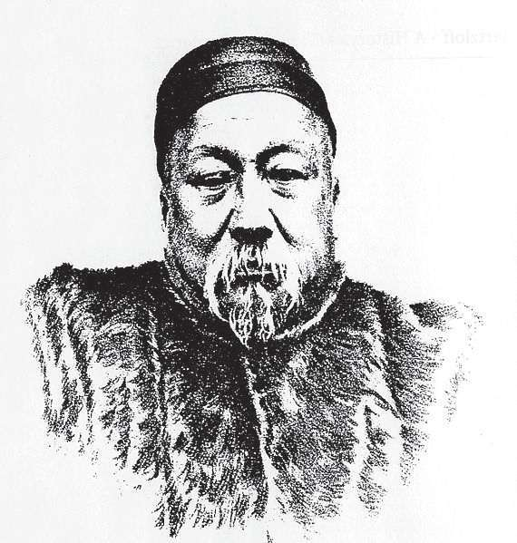
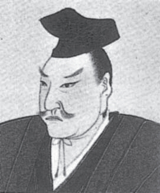
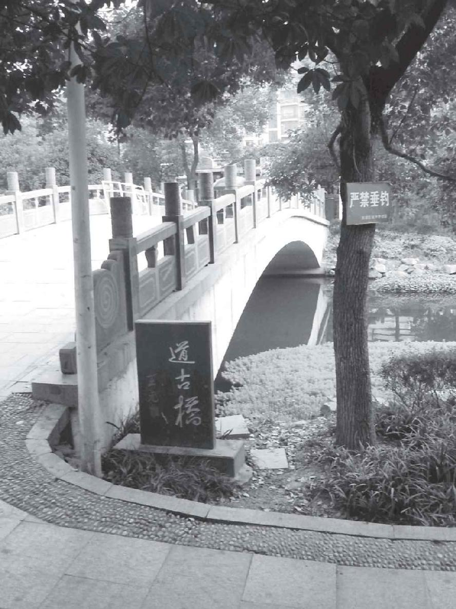

遗憾的是，《四元玉鉴》之后，元朝再无高深的数学著作出现。到了明朝，虽然农、工、商业仍在发展，《几何原本》等西方典籍也传入了中国，却由于理学统治、八股取士、大兴文字狱，禁锢了人们的思想，扼杀了自由创造。明朝的数学水平远低于宋元，数学家看不懂祖先发明的增乘开方法、天元术、四元术。汉唐宋元的数学著作不仅没有新的刻本，反而大多失传。直到清朝后期，才出了一个李善兰，他是近代科学的先驱人物和传播者。可惜，由于当时的中国数学已经远远落后于西方，仅凭李善兰一人之力根本追赶不上。
写到这里，我想提一下深受中国文化影响的日本数学，在明末清初中国数学处于停滞不前的状态时，日本江户（今东京）诞生了数学神童关孝和（1642—1708）。他仅比牛顿大几个月，后来被公认为日本数学的奠基人。关孝和的养父是一位武士，他自己也曾担任幕府直属的武士和宰相府的会计检查官。他改进了朱世杰的天元术，建立起行列式的数学理论，比莱布尼茨的理论更早，也更广泛。在微积分学方面他也有重要建树，只是由于武士的谦逊和各学派之间的保密原则，我们不知道哪些成就属于他个人。他和他的学生组成的“关流”是和算最大的流派，他本人也被尊称为日本的“算圣”。

清代最有成就的数学家李善兰

日本“算圣”关孝和
综观包括中世纪在内的古代中国数学史，数学家们大多是在以八股文取得一定的功名之后，才开始从事自己喜欢的数学研究。他们没有希腊的亚历山大大学和图书馆那样的群体研究机构和资料信息中心，只能以文养理或以官养理。这样一来，就难以全身心地投入研究。以数学进步较快的宋朝为例，多数数学家出身低级官吏，他们的注意力主要放在平民百姓和技术人员关心的问题上，因此忽略了理论工作。即使有著述，也大多是注释前人著作的形式。
不过，若是把古代中国的数学与其他古代民族，如埃及人、巴比伦人、印度人、阿拉伯人的数学，甚至中世纪欧洲各国的数学进行比较，还是很值得我们骄傲的。希腊数学就其抽象性和系统性而言，以欧几里得几何为代表，它的水平无疑是很高的，但在代数领域，中国人的成就不见得逊色，甚至可能略胜一筹。中国数学的最大弱点是缺少一种严格求证的思想，为数学而数学的情形极为罕见（一个突出的例子是规矩和欧几里得作图法的差异），这一点与贪图功名的文人一样，归因于一种功利主义。
功利主义当然有它的社会根源，学者们总是首先致力于统治阶级要求解决的问题。在中国古代，数学的重要性主要通过它与历法的关系显现出来，后者因为与信仰有关而成为帝王牢牢掌控的一个特权。赵爽证明勾股定理以后，便用它来求取某些与历法相关的一元二次方程的根。祖冲之偏爱用约率和密率来表示圆周率，其目的是为了准确地计算闰年的周期；而秦九韶的大衍术主要用于上元积年的推算，后者可以帮助确定回归年、朔望月等天文常数。
在古代中国，一旦农业连续几年歉收，饥荒导致人口减少，统治者便会担心民众造反，尤其是农民揭竿起义。把责任归咎于历法不够准确，影响了农事，无疑是一种很好的借口和开脱的理由。每逢这个时候，朝廷便会颁布诏书，着令学者们重新制定历法。这样一来的结果必然是，最杰出的数学头脑总是围绕着那几个古老的计算问题，他们普遍缺乏开辟新天地的勇气和胆量。不过，当代数学家吴文俊（1919—2017）从古代中国的算法思想中汲取灵感，创造出了“吴方法”，应用于几何定理的机器证明。
最后，说一则古代中国数学家的故事。这个故事发生在杭州，此城有陈建功（1893—1971）和苏步青（1902—2003）两位留学日本的数学博士，他们在浙江大学建立了“陈苏学派”。而在古代为数不多的数学家中，也有两位（沈括和杨辉）出生在杭州。与杨辉同时代的数学家秦九韶，字道古，他曾随家人在杭州生活多年。浙大西溪校区附近有一座石桥叫道古桥，相传此桥系秦九韶倡导并亲自设计，架在西溪河上，本名西溪桥，提议将此桥更名为道古桥的是元代数学家朱世杰。

道古新桥。作者摄
由于在秦九韶晚年和去世之后，有两位文人撰文称秦九韶贪污违法，致使秦九韶的名誉受到严重的损害，直到清代才有多名有识之士为他辩护，痛斥诽谤。同样遗憾的是，21世纪的一项市政工程使得桥毁河填，仅留道古桥公交车站。2012年，在作者的建议之下，杭州市有关部门将距老桥遗址约百米的一座新桥命名为道古桥。比起祖冲之的圆周率和球体积计算公式来，秦九韶的两项成就——大衍术和秦九韶算法更有意义。但圆周率的结论和故事却更容易被大众理解，也更符合国人心目中对英雄的美好想象。